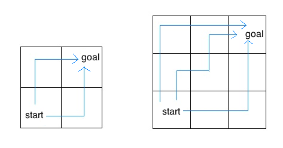

Recursion
Question 1: Sum
Using recursion, write a function sum that takes a single argument n and computes the sum of all integers between 0 and n inclusive. Do not write this function using a while
or for loop.
Assume n is non-negative.
def sum(n):
"""Using recursion, computes the sum of all integers between 1 and n, inclusive.
Assume n is positive.
>>> sum(1)
1
>>> sum(5) # 1 + 2 + 3 + 4 + 5
15
"""
"*** YOUR CODE HERE ***"
if n == 1:
return 1
return n + sum(n - 1)Use OK to test your code:
python3 ok -q sumQuestion 2: Has Seven
Write a function has_seven that takes a positive integer n and
returns whether n contains the digit 7. Do not use any assignment
statements - use recursion instead:
def has_seven(k):
"""Returns True if at least one of the digits of k is a 7, False otherwise.
>>> has_seven(3)
False
>>> has_seven(7)
True
>>> has_seven(2734)
True
>>> has_seven(2634)
False
>>> has_seven(734)
True
>>> has_seven(7777)
True
"""
"*** YOUR CODE HERE ***"
if k == 0:
return False
if k % 10 == 7:
return True
else:
return has_seven(k // 10)Use OK to test your code:
python3 ok -q has_sevenQuestion 3: Filter
Write the recursive version of the function filter which returns a list and takes in
f- a one-argument function that returnsTrueif the passed in argument should be included in the resulting list orFalseotherwiseseq- a list of values
Note that this is different from the built in filter function we learned previously, which returns a filter object, not a list.
def filter(f, seq):
"""Filter a sequence to only contain values allowed by filter.
>>> def is_even(x):
... return x % 2 == 0
>>> def divisible_by5(x):
... return x % 5 == 0
>>> filter(is_even, [1,2,3,4])
[2, 4]
>>> filter(divisible_by5, [1, 4, 9, 16, 25, 100])
[25, 100]
"""
"*** YOUR CODE HERE ***"
if seq == []:
return seq
if f(seq[0]):
return [seq[0]] + filter(f, seq[1:])
return filter(f, seq[1:])Use OK to test your code:
python3 ok -q filterQuestion 4: Decimal
Write the recursive version of the function decimal which takes in an integer n and returns a list of its digits, the decimal representation of n. See the doctests to handle the case where n < 0.
def decimal(n):
"""Return a list representing the decimal representation of a number.
>>> decimal(55055)
[5, 5, 0, 5, 5]
>>> decimal(-136)
['-', 1, 3, 6]
"""
"*** YOUR CODE HERE ***"
if n < 0:
return ['-'] + decimal(-1 * n)
elif n < 10:
return [n % 10]
else:
return decimal(n // 10) + [n % 10]Use OK to test your code:
python3 ok -q decimalQuestion 5: Insect Combinatorics
Consider an insect in an M by N grid. The insect starts at the
bottom left corner, (0, 0), and wants to end up at the top right
corner, (M-1, N-1). The insect is only capable of moving right or
up. Write a function paths that takes a grid length and width
and returns the number of different paths the insect can take from the
start to the goal. (There is a closed-form solution to this problem,
but try to answer it procedurally using recursion.)

For example, the 2 by 2 grid has a total of two ways for the insect to move from the start to the goal. For the 3 by 3 grid, the insect has 6 different paths (only 3 are shown above). Note that this problem uses tree recursion.
def paths(m, n):
"""Return the number of paths from one corner of an
M by N grid to the opposite corner.
>>> paths(2, 2)
2
>>> paths(5, 7)
210
>>> paths(117, 1)
1
>>> paths(1, 157)
1
"""
"*** YOUR CODE HERE ***"
if m == 0 or n == 0:
return 0
if m == 1 and n == 1:
return 1
return paths(m - 1, n) + paths(m, n - 1)Use OK to test your code:
python3 ok -q pathsSubmit
Make sure to submit this assignment by running:
python3 ok --submit